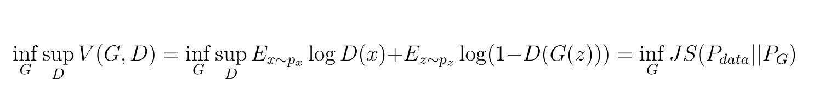
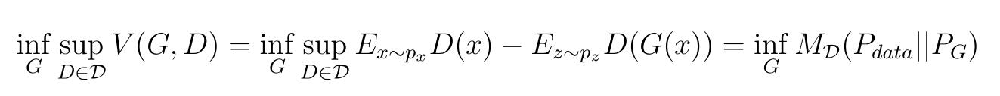
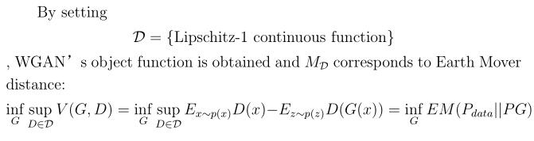
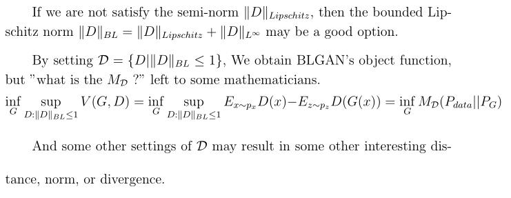
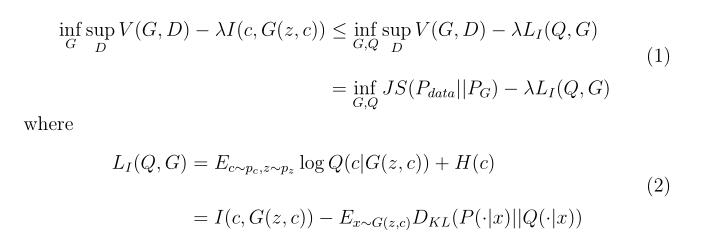
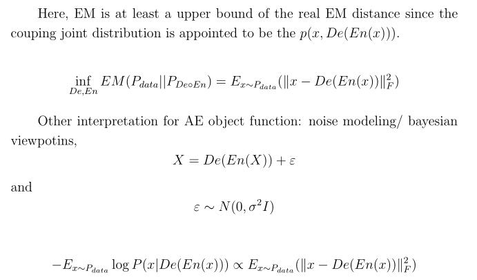
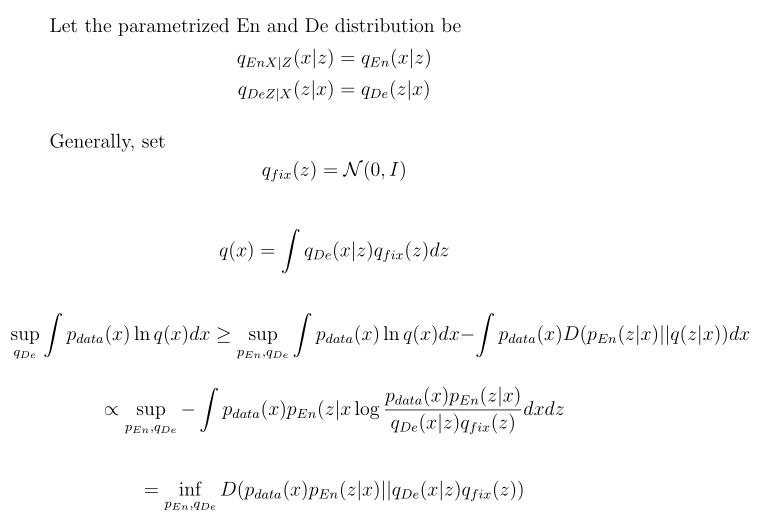
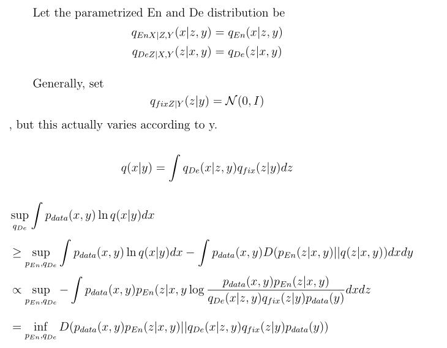

Some finding from VAE Tutorial and GAN papers.
VAE corresponds to the traditional probability learning philosophy : Maximum Likelihood Principle (Corresponding to Empirical KL-divergence) and Maximum A Posterior Principle Implemented by Approximate Inference Approaches.
GAN corresponds to the new emerging probability learning philosophy : Minimize a bounch of new Probability Similarity Metrics Implemented by Implicit Learning Approaches.
Recently, there are a lot of researches focused on uniting the two novel generative model: GAN and VAE. Those works provides their understanding with several rebuilt models regarding GAN and VAE.
Here we try to understand and memorize those models by their equivalent object functions under those probability learning philosophy.
Some common sense for notation: D is the discriminator, G is the Generator, Q is auxiliary encoder, De is the decoder, En is the encoder.







